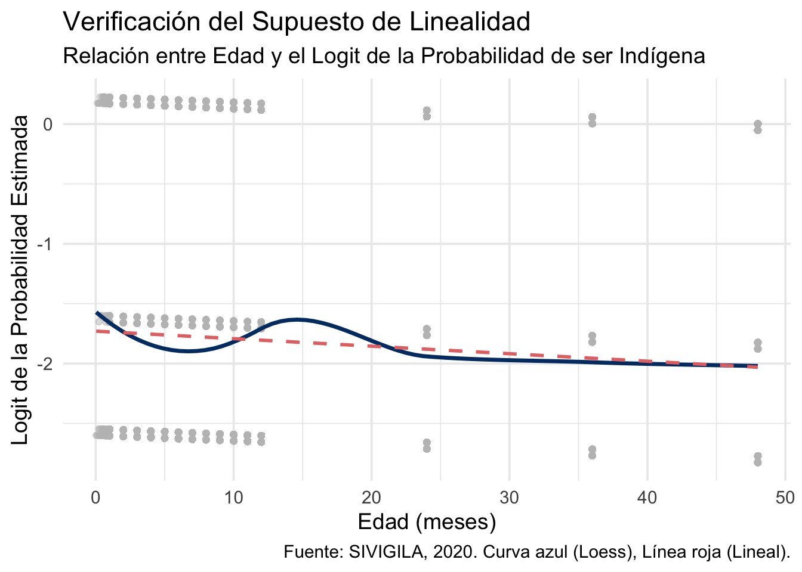
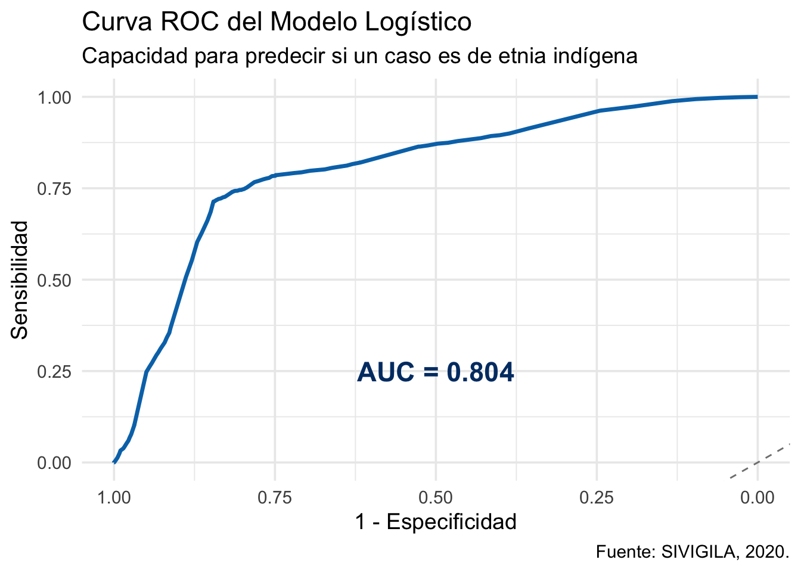

4 Análisis Estádistico
4.1 Carga de Datos
4.1.1 Preparación del Módelo
4.1.2 Independencia
“Se asume el cumplimiento del supuesto de independencia de las observaciones, dado que cada registro en la base de datos corresponde a un individuo único.”
4.1.3 Prueba de Multicolinealidad (VIF)
GVIF Df GVIF^(1/(2*Df))
edad_en_meses 1.001165 1 1.000583
sexo 1.001068 1 1.000534
area 1.000200 2 1.000050- Ausencia de Multicolinealidad (Resultados VIF)
- Interpretación: Todos los valores son muy cercanos a 1, lo que indica que no hay problemas de multicolinealidad. El supuesto se cumple
4.1.4 Prueba de Linealidad del Logit

4.1.5 Estimación del Módelo Logit
| Tabla: Modelo de Regresión Logística para la Predicción de Casos en Población Indígena | ||||
|---|---|---|---|---|
| Variable | Odds Ratio (OR) | IC 95% Inferior | IC 95% Superior | Valor p |
| (Intercept) | 0.074 | 0.065 | 0.084 | 0.000 |
| edad_en_meses | 0.995 | 0.991 | 1.000 | 3.065 × 10−2 |
| sexoF | 1.055 | 0.945 | 1.179 | 3.420 × 10−1 |
| area2 | 2.583 | 2.114 | 3.140 | 5.255 × 10−21 |
| area3 | 16.026 | 14.223 | 18.087 | 0.000 |
| Fuente: SIVIGILA, 2020. | ||||
4.1.6 Evaluación del Módelo
4.1.7 Significancia del Módelo
| Tabla: Prueba de Significancia del Modelo (Análisis de Varianza) | |||||
|---|---|---|---|---|---|
| term | df | deviance | df.residual | residual.deviance | p.value |
| NULL | NA | NA | 10,743.000 | 10,663.889 | NA |
| edad_en_meses | 1.000 | 8.198 | 10,742.000 | 10,655.691 | 0.004 |
| sexo | 1.000 | 1.609 | 10,741.000 | 10,654.082 | 0.205 |
| area | 2.000 | 2,523.939 | 10,739.000 | 8,130.143 | 0.000 |
| Fuente: SIVIGILA, 2020. | |||||
4.1.8 Matriz de confución y métricas de ajuste
| Tabla X: Métricas de Ajuste del Modelo | |
|---|---|
| Metrica | Valor |
| Precisión General (Accuracy) | 0.817 |
| Sensibilidad (Sensitivity) | 0.850 |
| Especificidad (Specificity) | 0.685 |
| Fuente: SIVIGILA, 2020. | |
4.1.9 Curva de ROC y AUC
Área Bajo la Curva (AUC): 0.804 